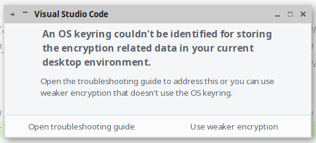

GitHub Copilot es una herramienta que utiliza Inteligencia Artificial para proporcionar sugerencias de estilo autocompletar mientras codifica. Se puede obtener más información, en "Acerca de GitHub Copilot para individuos".
Como, durante el curso, estamos utilizando Visual Studio Code, podemos ver e incorporar sugerencias de GitHub Copilot directamente dentro del editor.
Solicitar GitHub Copilot
Hay una suscripción gratuita a GitHub Copilot disponible para estudiantes y profesores.
Como estudiante, si actualmente recibes el GitHub Student Developer Pack, también se te ofrecerá una suscripción gratuita cuando visites la página de suscripción de GitHub Copilot.
Desde VSCode, aceptaremos la solicitud de autenticarnos en GitHub. Se abrirá nuestro navegador en donde, tras autenticarnos, nos solicitará permiso para que VS Code acceda a datos de nuestra cuenta.
Alberto Sierra. Autorizando a Visual Studio para utilizar Copilot (CC BY-NC-SA)
Si nos aparece un mensaje como el que se muestra a continuación, podemos (en nuestro entorno de máquina virtual) aceptar una encriptación más débil.

Alberto Sierra. Uso de encriptación débil.(CC BY-NC-SA)
Primera sugerencia
Accede al archivo routes/web.php y escribe el siguiente comentario:
/* Crea una ruta Laravel que acepte una petición GET al recurso /proyectos y genere el texto Listado de proyectos. */
GitHub Copilot generará el siguiente código:
Route::get('/proyectos', function () { return "Listado proyectos"; });
Pulsando la tecla del tabulador, aceptaremos esa sugerencia.